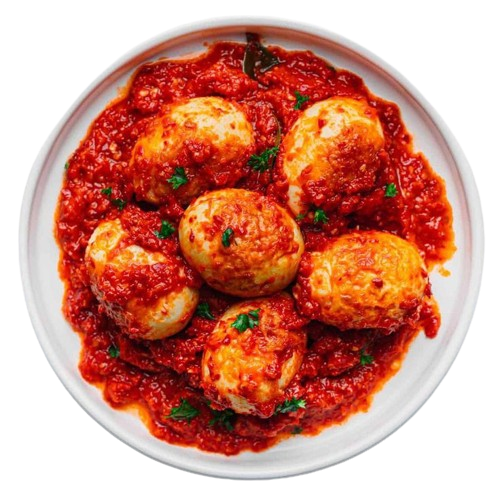

Telur Balado
Bahan bahan
- 6 butir telur ayam, rebus hingga matang, kupas
- 3 buah cabai merah besar, buang bijinya
- 10 buah cabai merah keriting / sesuai selera
- 5 siung bawang merah
- 3 siung bawang putih
- 2 buah tomat
- 1 lembar daun jeruk, buang tulang daunnya
- 1 sdm air jeruk nipis
- 1 sdm gula merah, serut
- Garam secukupnya
- Minyak goreng secukupnya untuk menumis dan menggoreng
Cara Memasak
- Goreng telur
- Haluskan cabai merah besar, cabai merah keriting, bawang merah, bawang putih, dan tomat.
- Tumis bumbu halus bersama daun jeruk hingga harum dan matang.
- Tambahkan air jeruk nipis, gula merah, dan garam. Aduk rata.
- Masukkan telur yang sudah digoreng ke dalam tumisan bumbu. Aduk hingga telur terbalut rata dengan bumbu.
- Masak sebentar hingga bumbu meresap ke dalam telur.
- Angkat dan sajikan.